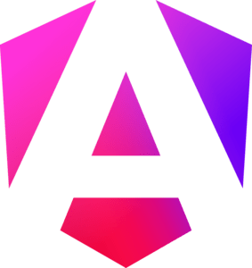
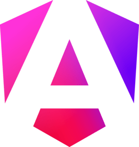
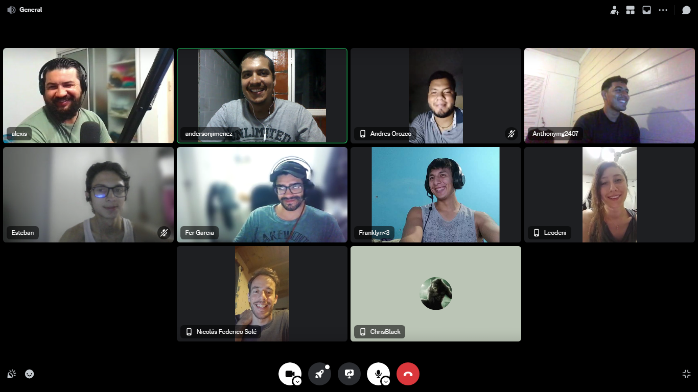

Simulación No Country
Simulación No Country
Marzo 2024 - Abril 2024
Dirigí y coordiné el equipo Back-End formabndo parte de un equipo multicultural, multidiciplinario en el cual destacamos como parte del preseleccionado. El equipo constituía de 12 personas de las cuales 6 eramos del Back, trabajando juntos para lograr crear un MVP de TeleMedicina.